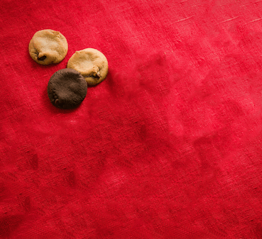

ソフトウェアネットワーク演習
１講時
やったこと
md
html
github
振り返って
一個のwebページが出来るまでにたくさんの工程があった。大きいい企業のほうがクオリティが高いことの方が多いので、 起業したり就職する上で必要なスキルなんだなと感じた。
2講時
やったこと
Premiere Pro CC
photoshop
順番
難しくてyoutuberにはなりたくないと思った
チュートリアルで勉強する
編集に必要な素材をドラッグで左下のプロジェクトにぶち込む
プロジェクトで編集したい順に並び替え真ん中下のタイムラインにドラッグ
各素材の長さを調節
音楽を入れたり、エフェクトを入れたりする
エフェクトは左上のタイムラインで編集
書き出しでYouTubeに乗っける

チュートリアルで勉強する
カントリーマアムをphotoshopで切り抜く
貼り付け→保存をくり消し一個ずつカントリーマアムの増えた画像を作る
サイトでgifを作成
振り返って
imovieに比べて操作が難しかった(pr)
ぼかしのエフェクトが上手にかからなかった(pr)
エフェクト編集するときキーフレームが重要(pr)
徐々に慣れたい
3講時
やったこと
マインドマップ
mesh
pintarestで好きな画像を100個集める。
ブレインストーミングで付箋に書き出していく。
自分のマインドマップを作り分析する。
マインドマップをみて
自分はミュージカルや陸上、靴製作など足に関係しているものに興味があることがわかった
意外にもインドアよりかはアクティブな面もあり体を動かして何かを得る方が好き
衣食住として見た時食に関してはこだわりはあるが偏っていて住のこだわりも特になく衣がつよめ
mesh.植物のボビー
BANと製作
[人感]人がボビーの前に来たら反応して話しかける
[湿度]湿度が低い（水が欲しい）時に人が来た場合水を求める声を出す.通知がスマホに来る
[ボタン]連動して一回分の水が流れありがとうと言う
ボタンを押された回数をカウンターで１週間分記録
振り返って
元々は撮った画像をインスタに乗っけたかったが、ギミックが探した限りではなく
作れなかった。ボビーをカスタムすることは今後クロステックに気軽に来てもらう
為にも継続したい。トライアンドエラーはしっかりできできないとこを明確にして
次に繋げられた。